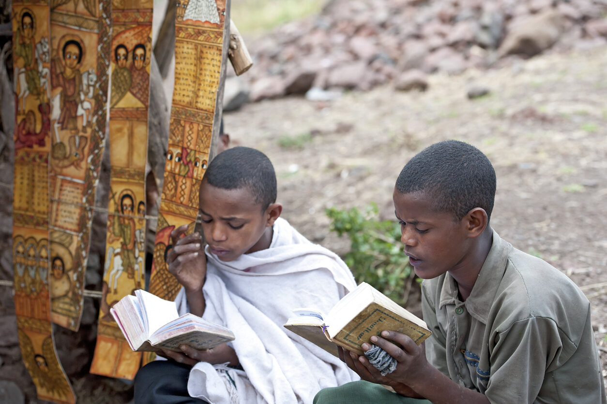

⛪ Praise of St Mary
This study includes the rehearsal of the daily orthodox prayer commonly known as the Praise of St. Mary.
🌹 For instance, one part of the Tuesday's prayer goes like:
You are the field wherein no seed was sowed, and yet from you came the fruit of life.
You are the treasure-chest which Joseph bought and received from within a precious gem which was our saviour Jesus Christ.
You carried him and brought him forth into the world. Ask for us Holy. 💐